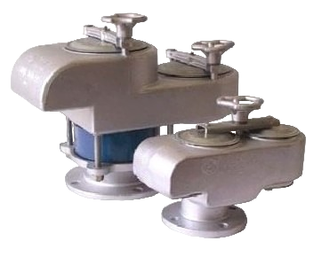

Клапан дыхательный СМДК-50А
Артикул: 0457
Металлохимическая компания (МХК)
Раздел: Технологическое · АЗС
Цена и наличие — по запросу. Поставляем оригинал и аналоги. Доставка по России.
Модификации и размеры (3)
- Клапан дыхательный СМДК-50А · арт. 0457
- Клапан дыхательный СМДК-100А · арт. 0492
- Клапан дыхательный СМДК-150А · арт. 0590
Подберём нужный вариант — уточните при запросе.
Описание
Клапан дыхательный СМДК-50А производства Металлохимическая компания (МХК) — позиция из раздела «Технологическое» для АЗС. Компания SYNDICAT поставляет оборудование и комплектующие для автозаправочных и газозаправочных станций по всей России. Цена и наличие «Клапан дыхательный СМДК-50А» — по запросу: оставьте заявку или позвоните, подберём оригинал или аналог и рассчитаем доставку.